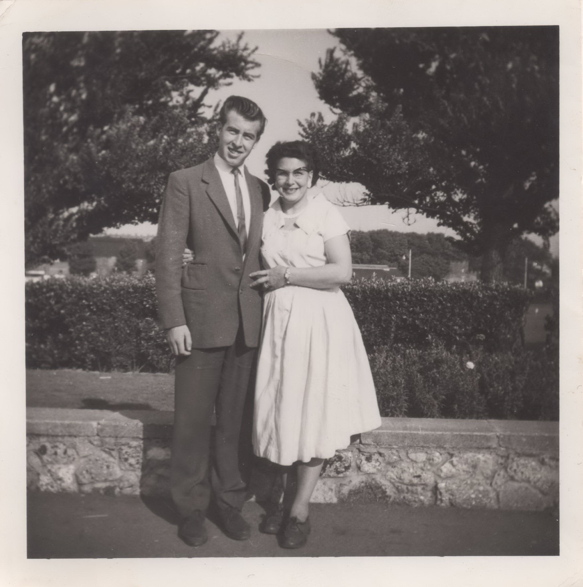

Lydia Florence Pierce (née Bonner) 1915 - 1988
[ Home ] | [ Calendar ] | [ Surnames Index ] | [ Census Index ] | [ Family History ]Lydia Bonner, the wife of James Sidney Cowell (the uncle of Nigel Horne), was born in Brighton, Sussex, England on Sep 10, 1915 and was married twice - to James Cowell (on Sep 10, 1938 in Margate, Kent, England) George Pierce (on Jul 31, 1954 in Edmonton, London, England)1. She had 3 children with James Cowell: Ronald J, James Roger and Wendy J.
During her life, she was living at 3 Church Road in Margate on Sep 29, 1939; and at Flat 2, 156 High Street in Margate in 1988.
She died on Jul 17, 1988 at Ramsgate Hospital, Ramsgate, Kent (cerebrovascular incident) and was buried at Margate Cemetery in Margate after Jul 17, 1988.
Children
- Ronald J was born c. Nov 1940
- Wendy J was born c. Aug 1946
Citations
- Kent Marriages And Banns - Findmypast
Media
James Sidney Cowell - Lydia Florence Bonner
James Sidney Cowell - Lydia Florence Bonner - marriage

Lydia Florence Bonner with her brother Roger

James Sidney Cowell - Lydia Florence Bonner - marriage certificate

George Pierce - Lydia Bonner - marriage certificate

Lydia Florence Bonner - George William Pierce - he

Lydia Bonner

Lydia Bonner - death certificate

East Kent Times and Mail - 16 Jan 1954
England & Wales marriages 1837-2008 - BMD/M/1954/3/AZ/000150/075
England & Wales marriages 1837-2008 Transcription - BMD-M-1938-3-AZ-000154-105
1939 Register Transcription - TNA-R39-1754-1754I-021-01
Family Tree

Generated by ged2site. Last updated on Jun 11, 2024